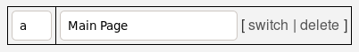
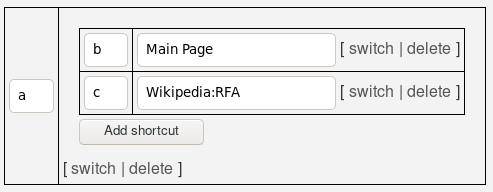

This tool will help you create superjump configurations.
The small text fields are for single keystrokes, like a for pressing "A". The big text fields are for navigating to pages. For example, this setup would send you to the main page whenever you press the access key a:

The "switch" link switches between a big text field and a submenu. A submenu will present another menu after you've typed the appropriate keystrokes. For example, this setup will bring up a submenu when you press the access key a. The submenu has two choices: you can press b for the main page, and c for the Requests for Adminship homepage:

When you're done, press the "Export and copy to clipboard" button, then go to your own superjump configuration page, edit it, and paste, replacing the existing contents.